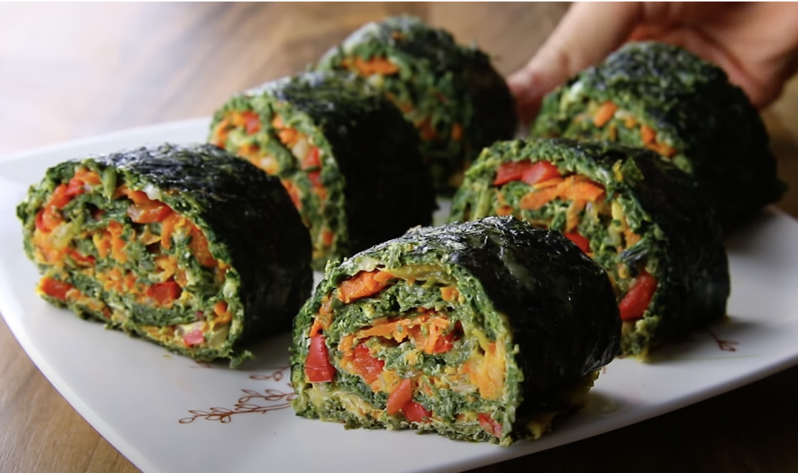

Stuffed Bell Pepper Rings

To make stuffed bell pepper rings you'll need:
- 2 Bell Peppers
- 1 Clove garlic
- 2 Eggs
- 1/2 Onion
- 1 Mashroom
- Salt and Black Pepper
- 1/2 cup Ground Turkey
- 1.5 tbsp Parsley
- 1 Egg white
- Italian seasoning
- 4 tbsp Tomato Sauce
- Mozzarella (optional)
- Pre-heat the oven to 180° C.
- Slice bell peppers into rings.
Finely chop up bottomsto be added into the turkey mixture. - Heat oil in a medium skillet and saute garlic onion,
mushroom, chopped bell pepper, for about 5 minutes
or until the onion becomes translucent. - Stir in the salt, pepper.
- Transfer mixture to a large bowl and add in turkey, egg, parsley, italian seasoning.
- Mix thoroughly.
- Divide the mixture evenly among the 4 bell pepper rings and place on a baking sheet.
- Spread tomato sauce over the mini meatloafs.
- Bake in the oven for 30-35 minutes.
- Top with extra parsley and Mozzarella if you want and ENJOY!!
Veggie Spinach Roll
To make a veggie spinach roll you'll need:
- 1 cup frozen spinach leaves
- 3 egg whites
- 1 egg
- 1/4 low fat mozzarella cheese
- salt and black pepper
- 1 clove garlic
- 1 tsp olive oil
- 1/2 onion
- 1/2 red bell pepper
- 1 medium carrot shredded
- 1.5 tbsp parsley
- Preheat oven to 200° C
- Thaw the spinach and squeeze out the water.
- Mix spinach, 3 egg whites, mozzarella, half the salt,
and pepper in a mixing bowl. - Place parchment paper on a baking sheet and spray with cooking spray.
- Move the spinach mixture to the sheet and press it flat, about 8x12 inches
in size and roughly ½ an inch thick. - Bake for 15 minutes. When done, set aside to cool on a rack.
- Finely chop onion and parsley. Grate the carrots.
- Fry the onions and garlic in a skillet with oil.
Add carrots and parsley and let it simmer for about
2-3 min. add the other half of the salt, and pepper and mix briefly. - Flip the spinach mat and take the skillet off the heat and add an egg
Mix it all together and spread the filling over the now cool spinach mat. - Roll up the spinach mat and filling. Bake for 25 minutes.
- Cut it into 5 slices